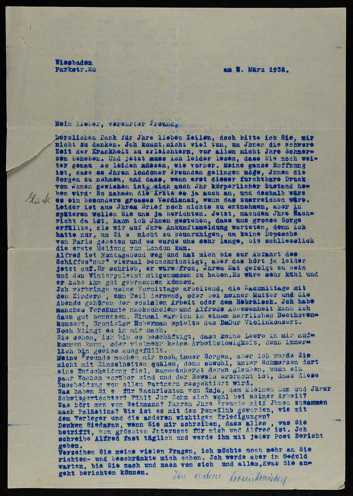

Letter 1 · p. 133
Leoni Landsberg → Dr. Schmarja Levin
Wiesbaden
Parkstr. 20
am 3. März 1932.
Mein lieber, verehrter Freund,
herzlichen Dank für Ihre lieben Zeilen, doch bitte ich Sie, mir nicht zu danken. Ich konnte nicht viel tun, um Ihnen die schwere Zeit der Krankheit zu erleichtern, vor allem nicht Ihre Schmerzen beheben. […]
Meine ganze Hoffnung ist, dass es Ihren Londoner Freunden gelingen möge, Ihnen die Sorgen zu nehmen […]
Alfred ist Montagabend weg und hat mich bis zur Abfahrt des Schiffes "nur" viermal benachrichtigt […] Er schrieb, er wäre froh, Ihrem Rat gefolgt zu sein und den Winterpaletot mitgenommen zu haben.
Ich verbringe meine Vormittage arbeitend, die Nachmittage mit den Kindern, zum Teil lernend, oder bei meiner Mutter und die Abende gehören der sozialen Arbeit oder dem Hebräisch. Ich habe manches Versäumte nachzuholen und Alfreds Abwesenheit kann ich dazu gut benutzen. Einmal war ich in einem herrlichen Beethovenkonzert: Bronislaw Huberman spielte das D-Dur Violinkonzert. Noch klingt es in mir nach. […]
Was haben Sie für Nachrichten von Enja, dem kleinen Dan und Ihrer Schwiegertochter? Was hört man von Weizmann? Fahren Ihre Freunde mit Ihnen zusammen nach Palästina? Wie ist es mit dem Pen-Klub geworden, wie mit dem Verleger und die anderen wichtigen Erledigungen?
Ihre ergebene Leonie Landsberg

F-0047-042 . p. 133